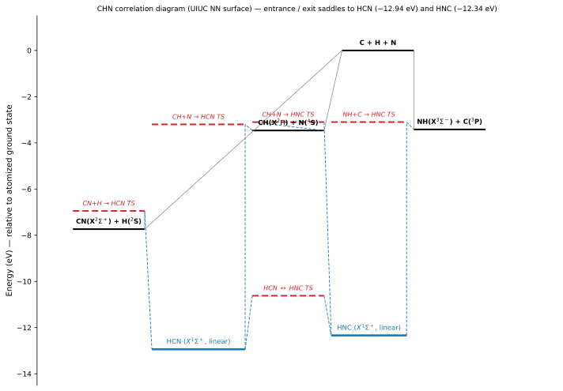

CHN System
The CHN system is a three-body arrangement of three distinguishable
atoms: carbon, hydrogen, nitrogen. Input files live under input/CHN/.
Arrangement
Atoms: C, H, N (all distinguishable).
Collision entries: CH + N, HN + C, or CN + H (depending on which pair is taken as the initial diatom).
Atom-pair numbering (see Quasi-Classical Trajectories): \((A, B, C) = (C, H, N)\) → pair 1 = CH, pair 2 = CN, pair 3 = HN.
Kinetic processes
The reactive pathway proceeds through the HCN / HNC intermediate and produces all three possible diatom arrangements plus full atomisation. The four asymptotic energies, taken relative to the fully-dissociated ground-state limit C(3P) + H(2S) + N(4S) \(\equiv 0\), are (using \(D_{0}(\mathrm{CN}) = 7.74\) eV, \(D_{0}(\mathrm{CH}) = 3.46\) eV, \(D_{0}(\mathrm{NH}) = 3.42\) eV):
CH and NH are nearly iso-energetic (~40 meV apart) so the CH+N \(\leftrightarrow\) HN+C exchange is essentially thermoneutral; the CN+H channel sits 4.3 eV below either of those. Per collision entry, the final-state channels — annotated with the entry-to-product energy difference (negative = exothermic, positive = endothermic) — are:
CH + N (entry at \(-3.46\) eV):
CN + H (entry at \(-7.74\) eV — the deepest asymptote, so every reactive channel from this entry is endothermic):
HN + C (entry at \(-3.42\) eV):
All three diatomic channels are chemically distinct (different binding energies and vibrational structure), so labelled vs indistinguishable averaging does not apply — every pathway is resolved on its own.
Correlation diagram
{kind=link}

Correlation diagram for the CHN system on the UIUC NN surface. Asymptotes use D$_0$(CN) = 7.74 eV, D$_0$(CH) = 3.46 eV, D$_0$(NH) = 3.42 eV. The HCN and HNC bound minima are shown schematically (HCN well at -12.94 eV, HNC isomer ~+0.6 eV above HCN); dashed coloured lines indicate symmetry-allowed correlations and grey lines mark the dissociation pathways.
PES models
Available surfaces: LEPS (London–Eyring–Polanyi–Sato, historical),
NN (neural-network regression of CASSCF ab-initio points). Example
inputs target reactive kinetics around \(T \sim 7500\) K.
Diatomic partners: CH_UIUC, CN_UIUC_2Sig, HN_UIUC.
Input file walkthrough
From input/CHN/UIUC_1A1/CH+N/input/CoarseAIR.inp, reproducing
the actual template banner structure. The cutting-levels /
sorting / statistics / rates sections follow the same layout as
N3 System and CNO System:
###########################################################################################
###### ######
###### Input File for QCT Code ######
###### ######
###########################################################################################
Generating Energy Levels? = no
Preprocessing Energy Levels List? = yes
Running Trajectories? = yes
Postprocessing Trajectories? = no
###########################################################################################
System = CHN
Nb of Species = 2
Species 1 = CH ! target
Species 2 = N ! projectile
Nb of Molecules = 3
Molecule 1 = CH
Molecule 2 = CN
Molecule 3 = HN
Nb of Atoms = 3
Atom 1 = C
Mass [a.u.] of Atom 1 = 21868.661757d0
Atom 2 = H
Mass [a.u.] of Atom 2 = 1835.0397616d0
Atom 3 = N
Mass [a.u.] of Atom 3 = 25519.042285d0
Database Path = /path/to/coarseair/dtb/
Relative Translational Energy Model = Boltzmann
Nb of Translational Temperatures = 1
Translational Temperature [K] 1 = 7500.d0
###########################################################################################
# RUNNING TRAJECTORIES and ANALYZING TRAJECTORIES
###########################################################################################
Nb of PESs = 1
Model, PES 1 = NN ! or LEPS for the historical benchmark
Degeneracy, PES 1 = 1.0
Diatomic Potential Model, Molecule 1 = UIUC_4Sig ! CH
Diatomic Potential Model, Molecule 2 = UIUC_2Sig ! CN
Diatomic Potential Model, Molecule 3 = Modified_Morse ! HN
Initial Impact Parameter Model = Stratified
Because C, H, N are all distinguishable, the three final-arrangement channels (CH+N, CN+H, HN+C) are tracked separately by the post-processor — no identical-atom averaging applies.